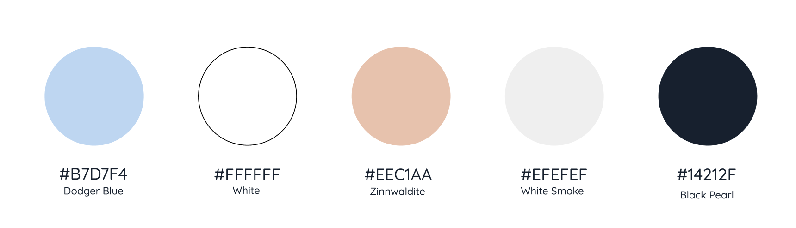

Colours
Meddy consists of light tons of red, green and blue, accompanied by white and black.We choose this color palette to provide a sense of softness. The blue color provides a sense of trust and clean and the red colour represent passion and energy.
Colour Palette
